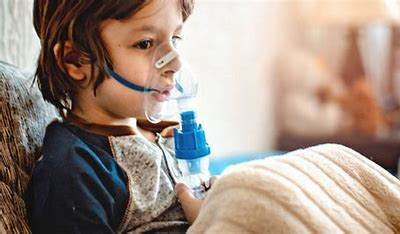

El asma es una enfermedad crónica de las vías respiratorias que se caracteriza por la inflamación
y estrechamiento de los bronquios, lo que dificulta la respiración. Los episodios de asma pueden
ser desencadenados por diversos factores, como alérgenos, infecciones respiratorias, cambios
climáticos y ejercicio.

Causas
El asma es una enfermedad crónica de las vías respiratorias que se caracteriza por la inflamación
y estrechamiento de los bronquios, lo que dificulta la respiración. Los episodios de asma pueden
ser desencadenados por diversos factores, como alérgenos, infecciones respiratorias,
cambios climáticos y ejercicio.
Alergenos: polen, ácaros del polvo, caspa de animales.
Contaminación del aire: humo de cigarro, polución.
Infecciones respiratorias: virus como el resfriado común.
Ejercicio físico: especialmente en climas fríos y secos.
Síntomas
Los síntomas del asma pueden variar en intensidad y frecuencia, e incluyen:
Sibilancias: un sonido agudo al respirar.
Tos: especialmente por la noche o temprano en la mañana.
Dificultad para respirar: sensación de falta de aire.
Opresión en el pecho: sensación de pesadez o constricción en el pecho.
Pruebas y exámenes
Son: Para diagnosticar el asma, los médicos pueden realizar varios exámenes, incluyendo:
Espirometría: mide el flujo de aire en los pulmones y su capacidad.
Pruebas de alergia: para identificar posibles alérgenos.
Medición del pico de flujo: mide la velocidad del aire que sale de los pulmones.
Prueba de provocación bronquial: para observar la respuesta de los bronquios a ciertos desencadenantes.
Tratamiento
El tratamiento del asma suele incluir:
Medicamentos de control: como corticosteroides inhalados y broncodilatadores
de acción prolongada, para reducir la inflamación y prevenir los síntomas.
Medicamentos de alivio: broncodilatadores de acción corta, para aliviar
los síntomas durante los episodios de asma.
Evitar desencadenantes: identificar y minimizar la exposición a los
factores que desencadenan los síntomas.
Expectativas
Con un tratamiento adecuado y una gestión eficaz, la mayoría de las personas con asma
pueden llevar una vida normal y activa. Sin embargo, el asma es una condición crónica,
por lo que es importante seguir el plan de tratamiento y hacer revisiones regulares con
el médico para ajustar el tratamiento según sea necesario.